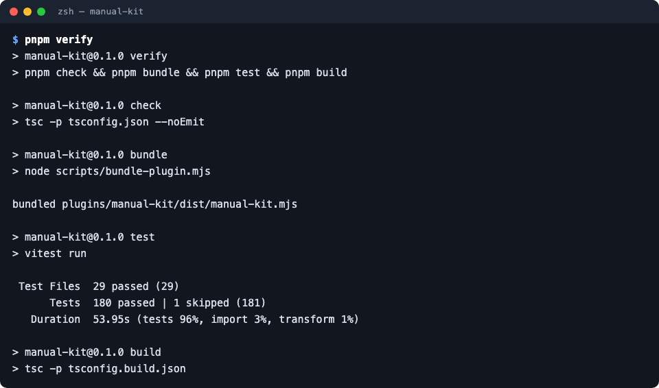

คู่มือการพัฒนา
เครื่องมือทำคู่มือการใช้งานระบบแบบทางการด้วย Claude Code
อัปเดตล่าสุด 2026-10-07
5858 ปัญหาพร้อมวิธีแก้ไม่เห็นปุ่ม ขึ้นข้อความแจ้งเตือน หรือหาข้อมูลไม่เจอ ดูสาเหตุและวิธีแก้รวมไว้ที่เดียว
งานที่ทำบ่อย ทีละขั้นพร้อมภาพ

ตั้งเครื่องสำหรับพัฒนาติดตั้ง ตรวจทั้งหมดด้วย pnpm verify สร้าง bundle และทดสอบ plugin โดยไม่แตะ config จริงของ Claude Code- เพิ่ม adapterสอน manual-kit ให้อ่านโครงการชนิดใหม่ (หน้าจอ ป้ายบนหน้าจอ บทบาท) โดยดู adapter nextjs เป็นตัวอย่าง
- เพิ่มกฎตรวจเพิ่มกฎใน manual-kit check โดยดูกฎ structure (หัวข้อของหน้า how-to) เป็นตัวอย่าง
- เพิ่ม action ถ่ายภาพเพิ่มการกระทำบนหน้าเว็บก่อนถ่ายภาพ (เช่น hover, press) ใน shots.yaml โดยเพิ่ม schema หนึ่งแถวและตัวรันหนึ่งบรรทัด
- เพิ่มผลลัพธ์หรือช่องทางเผยแพร่เพิ่มรูปแบบผลลัพธ์หรือที่เผยแพร่ใหม่ โดยดู publish outline เป็นตัวอย่าง (render target ใหม่ + แผน + ไฟล์ mapping ที่ทำซ้ำได้)
- แก้และทดสอบ skillskill คือโค้ดที่ Claude รัน แก้แล้วต้องพิสูจน์ด้วยการเทียบงานของ Claude แบบไม่มีกับมี skill ในโครงการทดสอบ
- ปล่อยเวอร์ชันและกติกาการทำงานจาก commit ถึงเครื่องของเพื่อนร่วมทีม (push main → claude plugin update) และกติกาการทำงานใน repo นี้
โครงสร้าง
- สถาปัตยกรรมเครื่องมือทำงานกลไกโดยไม่มี AI ส่วน skill ใช้วิจารณญาณ ทั้งสองต่อกันเป็นสายงาน discover → spec → pages → capture → encode → build → check → publish
- โครงสร้าง repoแต่ละโฟลเดอร์ของ repo มีหน้าที่อะไร ไฟล์ไหนสร้างจากไฟล์ไหน และไฟล์ไหนต้อง commit
- ตั้งเครื่องสำหรับพัฒนาติดตั้ง ตรวจทั้งหมดด้วย pnpm verify สร้าง bundle และทดสอบ plugin โดยไม่แตะ config จริงของ Claude Code
ต่อยอด
- เพิ่ม adapterสอน manual-kit ให้อ่านโครงการชนิดใหม่ (หน้าจอ ป้ายบนหน้าจอ บทบาท) โดยดู adapter nextjs เป็นตัวอย่าง
- เพิ่มกฎตรวจเพิ่มกฎใน manual-kit check โดยดูกฎ structure (หัวข้อของหน้า how-to) เป็นตัวอย่าง
- เพิ่ม action ถ่ายภาพเพิ่มการกระทำบนหน้าเว็บก่อนถ่ายภาพ (เช่น hover, press) ใน shots.yaml โดยเพิ่ม schema หนึ่งแถวและตัวรันหนึ่งบรรทัด
- เพิ่มผลลัพธ์หรือช่องทางเผยแพร่เพิ่มรูปแบบผลลัพธ์หรือที่เผยแพร่ใหม่ โดยดู publish outline เป็นตัวอย่าง (render target ใหม่ + แผน + ไฟล์ mapping ที่ทำซ้ำได้)
- ธีม แม่แบบลูกค้า และกฎ DOCX ภาษาไทยไฟล์ไหนกำหนดหน้าตาของ PDF, DOCX และเว็บ โครงการใส่แม่แบบของลูกค้าได้ตรงไหน และกฎที่ทำให้ภาษาไทยใน Word ถูกต้อง
คุณภาพและการปล่อย
- แก้และทดสอบ skillskill คือโค้ดที่ Claude รัน แก้แล้วต้องพิสูจน์ด้วยการเทียบงานของ Claude แบบไม่มีกับมี skill ในโครงการทดสอบ
- กลยุทธ์การทดสอบเทสต์รัน CLI จริงกับโครงการตัวอย่าง แล้วตรวจสิ่งที่ผู้ใช้เห็น (ข้อความใน PDF, XML ใน DOCX, ภาพ, ผล check)
- ปล่อยเวอร์ชันและกติกาการทำงานจาก commit ถึงเครื่องของเพื่อนร่วมทีม (push main → claude plugin update) และกติกาการทำงานใน repo นี้
- บทเรียนที่ได้ปัญหาจริงที่เจอระหว่างสร้าง manual-kit สาเหตุ และสิ่งที่เปลี่ยนในโครงสร้างเพื่อไม่ให้เกิดซ้ำ
ดาวน์โหลด
บทนำ
วัตถุประสงค์
อธิบายว่า manual-kit คืออะไร ใช้ทำคู่มือการใช้งานระบบแบบทางการให้ลูกค้าอย่างไรตั้งแต่ติดตั้งจนส่งมอบและดูแลต่อ (คู่มือการใช้งาน) และอธิบายโครงสร้างภายในกับวิธีต่อยอดเครื่องมือสำหรับนักพัฒนา (คู่มือการพัฒนา)
ขอบเขต
ครอบคลุม plugin สำหรับ Claude Code (คำสั่ง /manual และ skill) คำสั่ง manual-kit ทุกคำสั่ง ผลลัพธ์ PDF, Word, เว็บคู่มือ และ Outline wiki งาน CI บน GitLab และการพัฒนา repo manual-kit ไม่ครอบคลุมวิธีใช้ระบบของลูกค้าแต่ละโครงการ
กลุ่มผู้ใช้
คู่มือการใช้งาน: เพื่อนร่วมทีมที่ต้องทำคู่มือส่งลูกค้า หัวหน้าทีม และผู้จัดการโครงการ (ไม่ต้องเขียนโค้ดเป็น) คู่มือการพัฒนา: นักพัฒนาที่ดูแลหรือเพิ่มความสามารถให้ manual-kit (เขียน TypeScript และใช้ Git เป็น)
| คำศัพท์ | ความหมาย |
|---|---|
| Claude Code | โปรแกรมผู้ช่วยเขียนโค้ดของ Anthropic ที่ทำงานใน terminal เราสั่งงานด้วยข้อความหรือคำสั่งที่ขึ้นต้นด้วย / |
| plugin | ชุดส่วนเสริมของ Claude Code ที่ติดตั้งเพิ่มได้ manual-kit มาเป็น plugin ที่มีคำสั่ง /manual, skill และเครื่องมือ manual-kit |
| marketplace | ที่เก็บรายการ plugin ให้ Claude Code ติดตั้ง repo manual-kit เป็น marketplace ชื่อ manual-kit |
| skill | เอกสารวิธีทำงานที่ Claude อ่านแล้วทำตาม manual-kit มีสองตัว: manual (ขั้นตอนตั้งแต่ต้นจนจบ) และ building-product-manuals (กติกาการเขียนคู่มือ) |
| สเปกคู่มือ | ไฟล์ manual-spec.md ที่สรุประบบ ผู้ใช้ ความสามารถ ขั้นตอนการทำงาน และแผนหน้าคู่มือ ทุกข้ออ้างไฟล์ต้นทาง |
| การรับรอง (sign) | การบันทึกว่าคนอ่านหน้านั้นแล้วและเห็นว่าตรงกับระบบ ทำโดยคนเท่านั้น |
| (รอระบุ) | เครื่องหมายแทนข้อมูลที่ยังไม่รู้ เช่น เลขที่เอกสารหรือผู้อนุมัติ ต้องกรอกก่อนส่งลูกค้า |
ภาคผนวก
ติดต่อ
(รอระบุ) ช่องทางติดต่อผู้ดูแล manual-kit